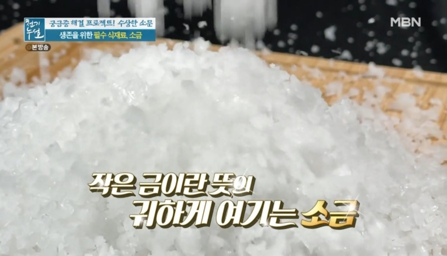

원소주기율표 상에서 3주기 17족에 속하는 할로젠족 원소로 원소기호는 Cl, 녹는점은 -101.5℃, 끓는점은 -34.04℃, 밀도는 3.2g/L이다. 플루오린, 산소 다음으로 크고 자극적인 냄새가 나는 녹황색 기체이다. 염소분자(Cl2)는 강력한 산화제이며 표백제로 쓰인다. 염소는 오래 전부터 소금(NaCl)의 주성분으로 주요한 역할을 해 왔지만 원소로 인식되지 못하다가 1774년 스웨덴의 화학자 카를 W.셸레가 연망가니즈석에 대한 연구를 하던 중 연망가니즈석과 염산을 반응시키자 녹황색의 유독한 기체가 발생하는 것을 발견하였다. 반응성이 커서 비활성기체를 제외하고 거의 모든 원소와 반응하며 금속원소와 이온결합하여 이온성화합물을 만들고 비금속원소와 결합하여 유기화합물을 만든다. 결핍 때에는 구토, 설사 및 부신피질에 질환이 생기며 과잉섭취 했을 때는 탈수, 고혈압, 위산과다, 위궤양 등의 질환이 생길 수 있다.
